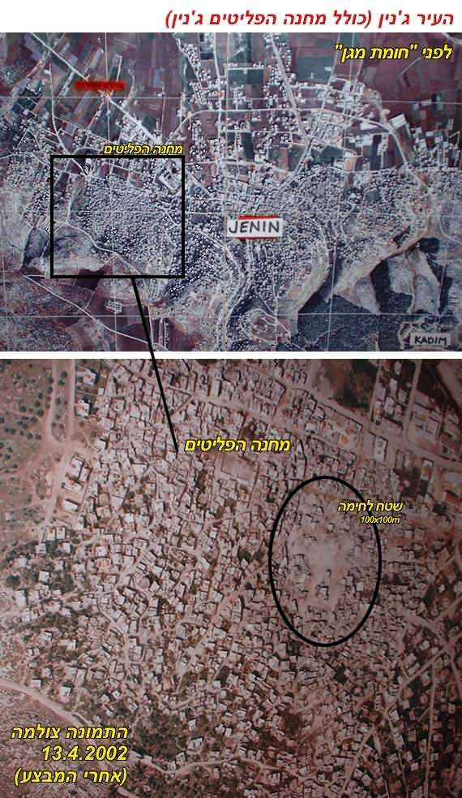
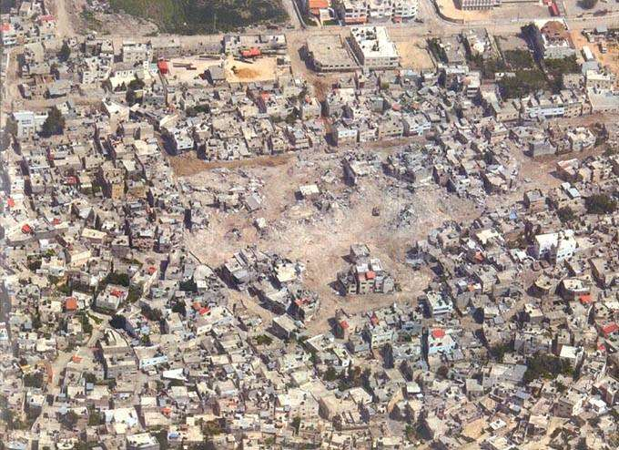

20/04/2002


Pour mémoire, les sources palestiniennes elles-mêmes, ont rapidement reconnu alors que moins d’une soixantaine de ‘combattants’ palestiniens avaient trouvé la mort dans les combats. On est loin des milliers de cadavres prétendument enterrés
au bulldozer par l’armée israélienne, selon les bobards de presse d’alors.
ANALYSE SUR LE SITE DU JOURNAL LIBANAIS L’ORIENT-LE-JOUR
15/04/2002
Un journaliste français, qui a passé 48 heures près du centre du camp de réfugiés palestiniens de Jénine, a déclaré hier qu’il avait «senti une odeur de cadavres» dans ce camp conquis vendredi dernier par l’armée israélienne. Pierre Barbancey, du quotidien L’Humanité, a indiqué que, selon plusieurs témoignages palestiniens, l’armée avait enterré et recouvert de béton des cadavres dans un trou creusé sur la place centrale du camp. Le centre du camp ressemble, selon lui, «à Berlin en 1945» (capitale allemande détruite par les Alliés) vu l’ampleur des destructions. Il a indiqué avoir «senti une odeur de cadavres, vu des poubelles qui s’entassaient, des moustiques, avec des conditions d’hygiène absolument affreuses, des gamins sales, des femmes qui criaient avec leurs enfants dans les bras parce qu’elles ne pouvaient plus les laver en raison du manque d’eau. Il n’y avait quasiment plus de nourriture, plus de lait pour les enfants». Pierre Barbancey, qui a indiqué avoir séjourné 48 heures chez une famille palestinienne près de la place Hawashin, a ajouté que les maisons du centre du camp étaient «complètement détruites». «Surtout vers la place Hawashin, on a une vision de Berlin 1945. C’est vraiment détruit. Tout le camp a été plus ou moins touché à des degrés divers, un peu moins le haut du camp, mais en bas vers le centre c’est vraiment la destruction», a-t-il dit. Le journaliste a encore expliqué que durant les deux nuits qu’il avait passées dans le camp, il avait «entendu des bulldozers israéliens en action, spécialement la première nuit (de vendredi à samedi). Dans les rues, on ne voit plus de cadavres. Dans le centre du camp, dans deux immeubles différents, j’ai vu, dans l’un, un cadavre complètement brûlé, et dans l’autre, sous des débris, deux autres cadavres», a-t-il dit. Pierre Barbancey a par ailleurs indiqué que, «selon plusieurs témoignages, des cadavres ont été jetés dans un trou creusé sur la place Hawashin et ensuite recouverts. Depuis, a-t-il dit, tous les morceaux de béton des maisons détruites sont mis dessus par l’armée israélienne». L’armée israélienne a pris entièrement le contrôle du camp de Jénine après huit jours de furieux combats avec des combattants armés palestiniens. Nota: Ce reportage de Pierre Brabançay lui a valu de recevoir, en 2002, le prix Bayeux des Reporters de guerre.
Première mis en ligne (2002) sur le site privé de M. Macina, debriefing.org, aujourd’hui fermé.
Repris sur Academia.edu, le 24 août 2019